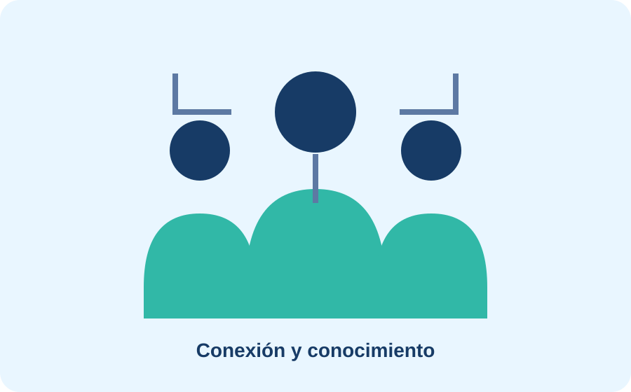

Educación
Las plataformas virtuales amplían el acceso a cursos, materiales y tutorías. También permiten aprender a distintos ritmos.
La web ha modificado cómo nos comunicamos, aprendemos, trabajamos y participamos en la vida pública.
Las plataformas web permiten intercambiar mensajes, documentos y contenidos en tiempo real. Las comunidades pueden organizarse y compartir conocimientos sin depender de la cercanía física.

Las plataformas virtuales amplían el acceso a cursos, materiales y tutorías. También permiten aprender a distintos ritmos.
Las tecnologías accesibles pueden facilitar la participación de personas con distintas necesidades y contextos.
Los canales digitales facilitan la difusión de información y la interacción con instituciones y comunidades.